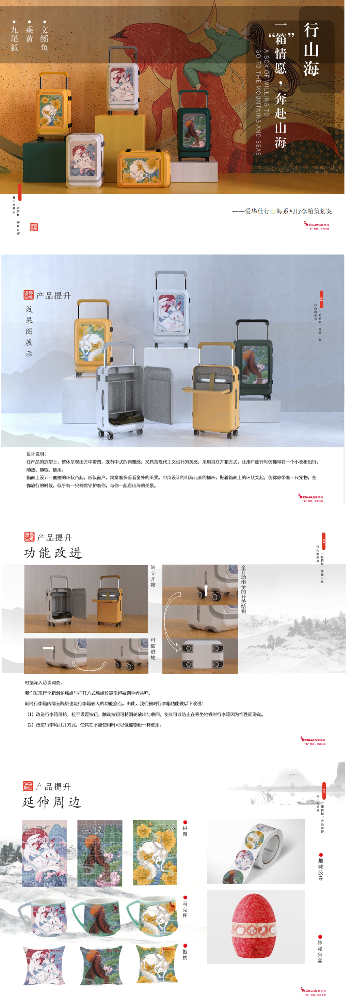
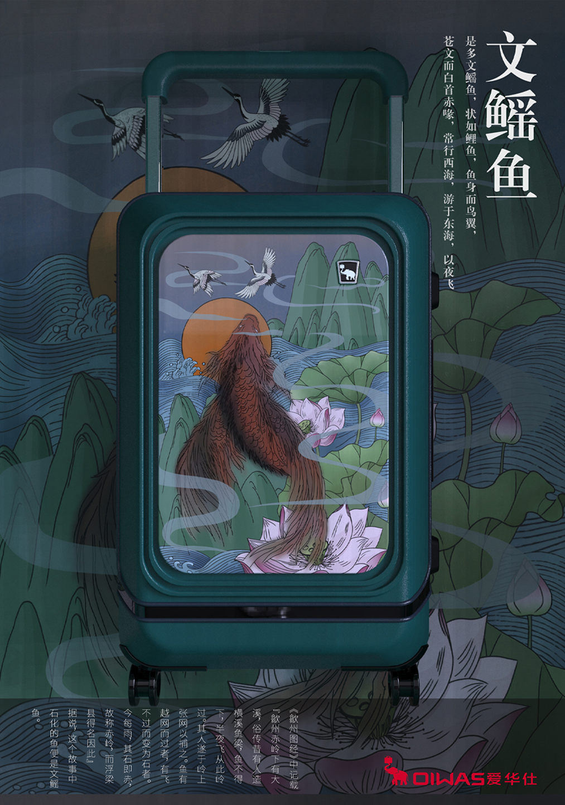
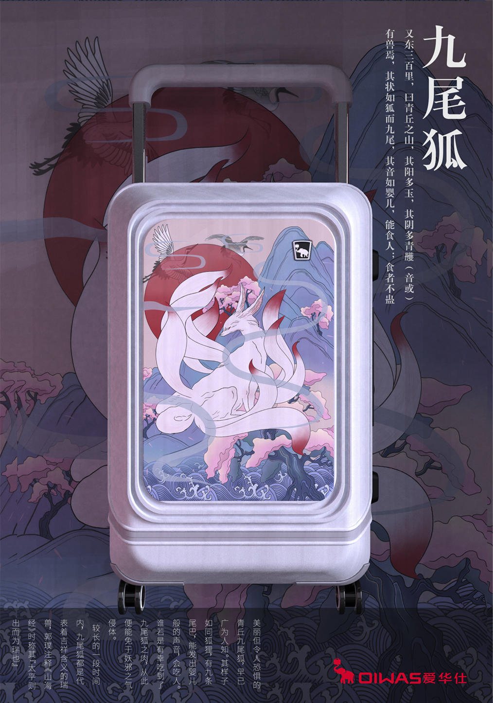
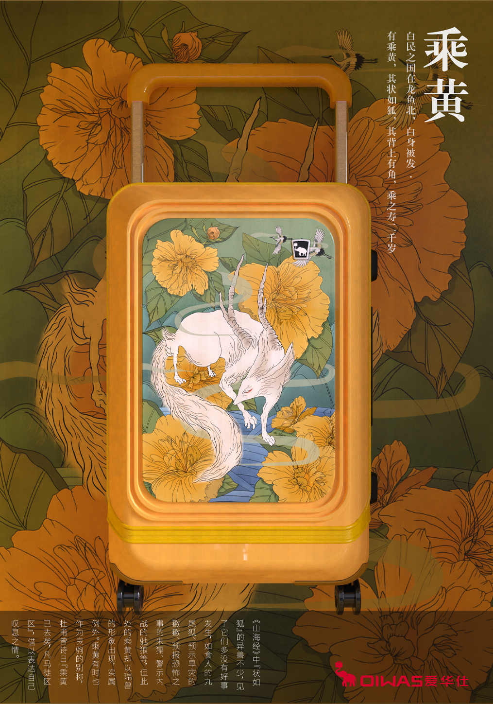
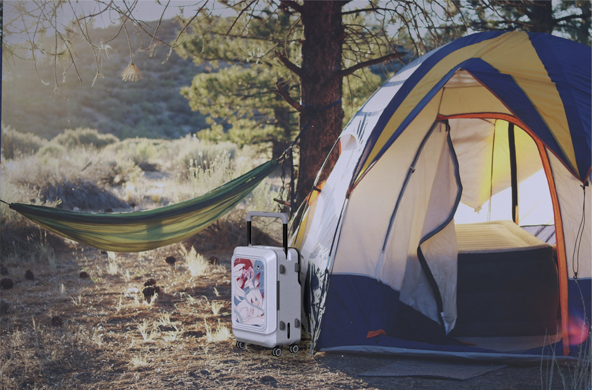
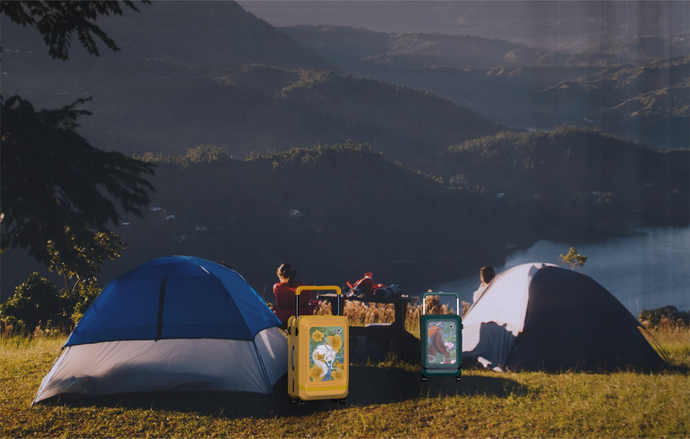
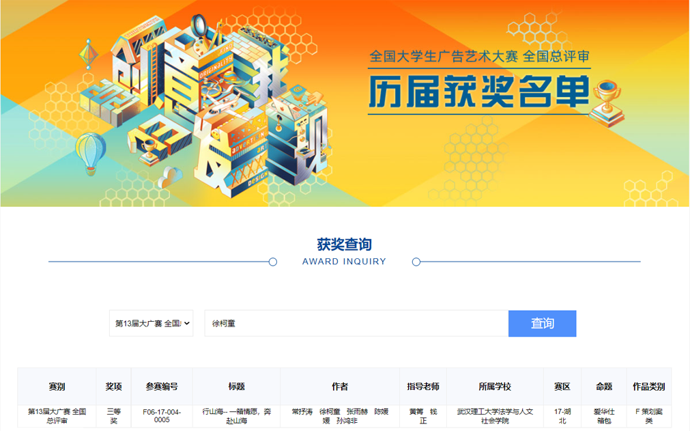

行山海 | Aihuas brand luggage design
This design practice is a cross-border cooperation. I was invited to complete the Aihuas brand luggage planning case with my journalism and advertising students, art students, economics students, and mechanics.
In this planning case, we launched a series of national trendy luggage with a comprehensive upgrade of appearance and function, aiming at the consumption characteristics of contemporary Chinese young people who are keen on domestic products and pursue individuality. Through the integration of content communication, marketing activities and publicity media, the promotion of product image will be strengthened, the purchase rate of young groups will be increased, the inherent brand impression of young consumers on Aihuashi will be broken, and the brand will be rejuvenated.
In the team, I am mainly responsible for the design of luggage, combining the elements in "Shan Hai Jing" and the existing luggage pain points, to upgrade the traditional Aihuashi luggage in terms of function and shape.
     In September ，2021, we got National Third Prize in the National College Student Advertising Art Competition
This time is a very good cross-border cooperation. During this cooperation, I not only improved my design ability, but also learned a lot of other knowledge such as advertising and marketing, economics and so on. It is an unforgettable and wonderful experience to work with students from different majors. .
Group members:
Shutao Chang(Advertising ),Ketong Xu (Industrial Design) Yuhe Zhang(Economics ),Yuanyuan Chen(Art ), Hongfei sun(Mechanics )
Instructor: Professor Qing Huang , Professor Sen Qian